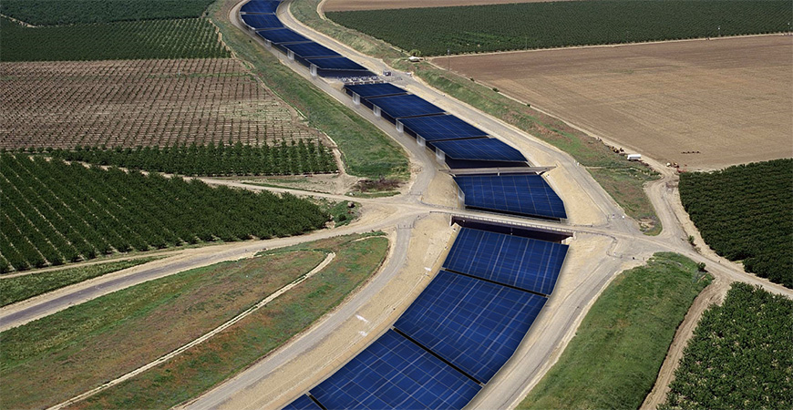

Solar Panels Over Canals Can Save Money,
Energy and Water, Study Shows
March 18, 2021
By Elizabeth Arakelian
Covering California's canals in solar panels could save 63 billion gallons of water annually, which is comparable to the amount needed to irrigate 50,000 acres of farmland.
Covering the 4,000 miles of California’s water canals could save billions of gallons of water and generate renewable power for the state every year, according to a new study.
The study was published in the journal Nature Sustainability. Professors Roger Bales, Joshua Viers and Tapan Pathak authored the paper with researchers Andrew Zumkehr, Jenny Ta and Elliot Campbell in collaboration with UC Water and Professor Brandi McKuin of UC Santa Cruz, an alumna of UC Merced.
The research explores the interconnected nature and costs of moving water across the state. It tested the thesis that by erecting a modular system of solar shading panels over California’s exposed aqueducts, the state can reduce evaporative water loss and provide a variety of benefits when compared to conventional ground-mounted solar systems. The Solar AquaGrid study was underwritten by NRG Energy, with development support from the Bay Area agency Citizen Group.
Results show a savings of 63 billion gallons of water annually, which is comparable to the amount needed to irrigate 50,000 acres of farmland or meet the residential water needs of more than 2 million people. And the 13 gigawatts of solar power the solar panels would generate each year would equal about one sixth of the state’s current installed capacity — roughly half the projected new capacity needed by 2030 to meet the state’s decarbonization goals.
“The SolarAqua Grid model provides a combined, integrated response to addressing our water/energy nexus,” Bales said. “It can help address California’s underlying vulnerabilities while meeting both state and federal level commitments to produce renewable energy, lower greenhouse gas emissions and mitigate climate change. Solutions such as these are not only viable but more urgently needed than ever before, particularly as the region returns to what many researchers refer to as a paleo-drought — a worst-case scenario for water managers.”
“We were surprised by the significant evaporation savings, which we project to be as much as 82%,” added UC Santa Cruz postdoctoral scholar Brandi McKuin, lead author of the report. “That amount of water can make a significant difference in water-short regions.”
Because the solar panels shade the canals from direct sunlight, McKuin added, they would not only mitigate evaporation but also curtail the growth of aquatic weeds and reduce maintenance costs, while the evaporation that does occur actually cools the panels, increasing their efficiency in converting sunlight to electricity.
The analysis shows that adding solar coverings above canals that run across ‘already disturbed land’ means developers can avoid protracted environmental permitting and right-of-way issues so systems can be deployed more quickly and cost effectively.
The study estimates that, for California, the resulting annual savings in maintenance costs could be as much as $40,000 per mile of canal. In addition, the retirement of old diesel pumps and generators in favor of solar arrays would contribute to cleaner air in California’s Central Valley, which suffers from among the worst air quality in the nation.
“What is most compelling about this study is that when you tally up the multiple benefits,” Bales said, “solar over canals represents the sort of shift in thinking that California and the world need as we transition our economy and infrastructure to a fossil-free, sustainable future.”
The UC Solar AquaGrid study comes at a time when there is growing urgency for shifting from fossil fuels to renewable energy. UC engineers are rethinking how aging water and energy infrastructure can adapt to the challenges of sustainable water management, catastrophic wildfires, multi-day power outages and the American West’s "megadrought” — an ongoing stretch of extended dry conditions worse than any experienced since 1603, according to a recent report in the journal Science.
The Biden administration has called for rapid modernization of water, transportation and energy infrastructure to withstand the impacts of extreme climate. Federal agencies have been directed to identify new opportunities to spur innovation, commercialization and deployment of clean-energy technologies and infrastructure.
California is calling for 50% of its electricity to come from renewable sources by 2030 and the sale of all new passenger vehicles to be zero-emission by 2035.
This study demonstrates one way to further the mission of sustainability by using existing structures.
“Aqueducts are the arteries of our economic and social development, and have captured the public’s imagination for centuries,” said former State Water Board Chair Felicia Marcus. “A significant amount of our state’s electricity bill comes from moving, treating and heating water, so water efficiency is also energy efficiency. We need to find every way we can to use water more efficiently, including stemming evaporative loss, as we also scale up clean energy to meet the needs of the challenging century ahead under climate change.”